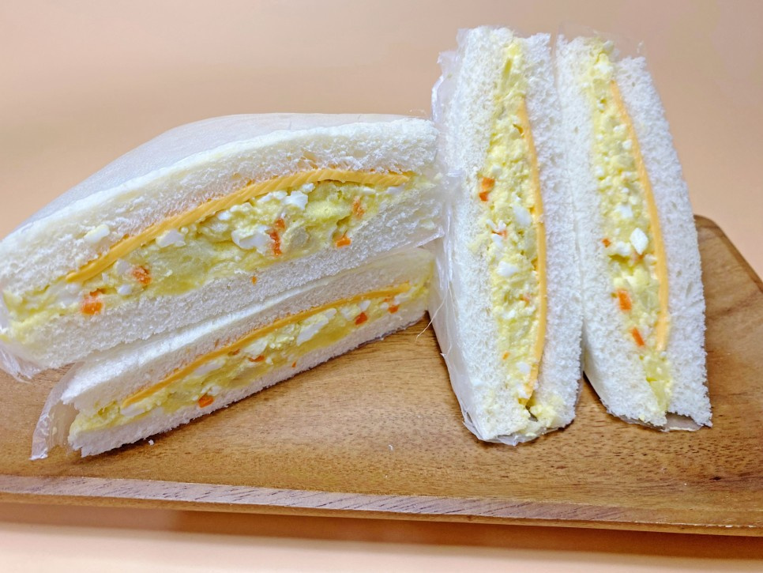

Egg-Potato Sandwich Recipe

Description
This is the BEST and the EASIEST recipe to make an 'Egg-Potato Sandwich'
You can make this anytime you want!
Ingredients
- Plain bread - 4piece
- Cheddar cheese - 2piece
- Eggs - 2ea
- Potato - 1ea
- Vegitable pickle
- Carrot
- Salt
- Mayonnaise
- Vinegar
Instructions
- Put water in a pot and boil it first.
When the water boils, add eggs and a teaspoon of salt and a tablespoon of vinegar.
And cook on medium heat for 12 minutes.
- When the egg is done, soak it in cold water for a while and peel it.
- Peel the potatoes and slice them.
The weight of the skin came out to be 150g.
And put it in a microwaveable container, wrap it with a microwaveable lid or wrap, and microwave it for 4 to 5 minutes.
- Please cut the carrots and pickles into small pieces and prepare them in advance.
- Mash potatoes directly with a fork while they are hot.
- Mash the eggs with a fork, too.
- Add mashed potatoes, chopped carrots and pickles to eggs and add 1 teaspoon of salt and mix first.
- Now add 2 tablespoons of mayonnaise and mix well.
- Now prepare 4 slices of bread.
Place cheddar cheese on two slices of bread first.
- Add half the egg potato salad you made on top of it.
- The edges of the bread were a little stiff, so I covered the bread and cut the edges.(Optional)
- And please wrap it tightly so that it doesn't leak.
Cut the packaged sandwich in half to make it easy to eat.